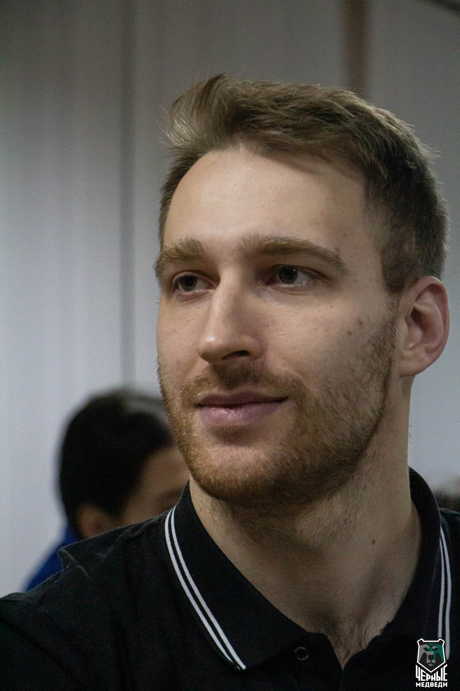
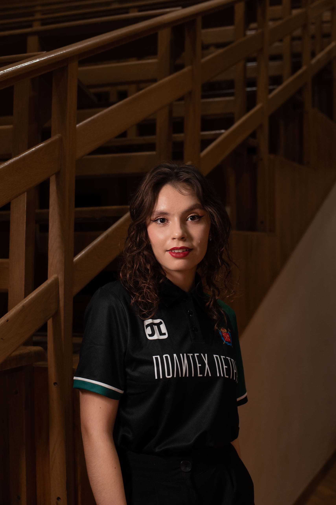
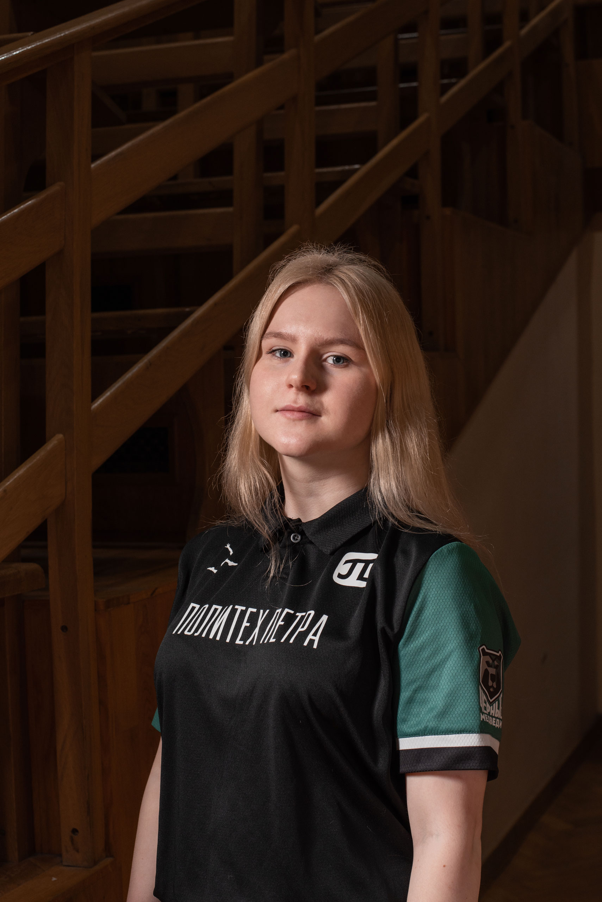
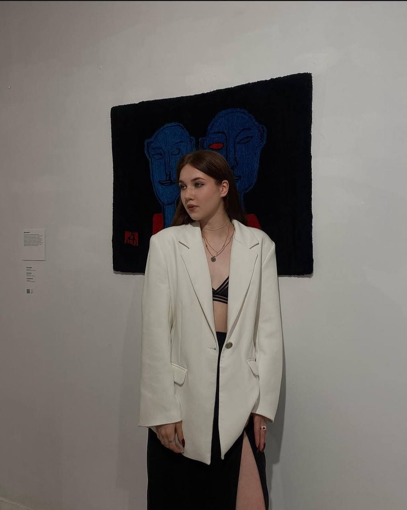
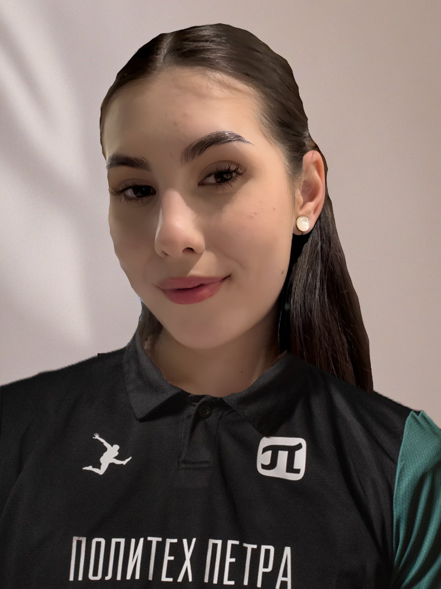
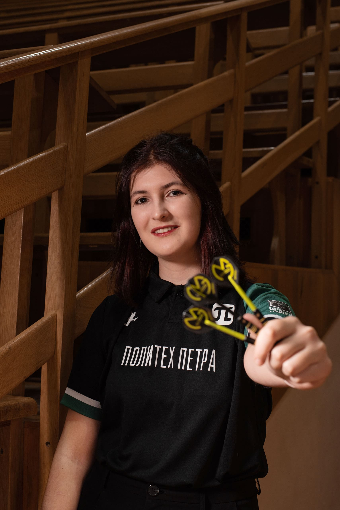
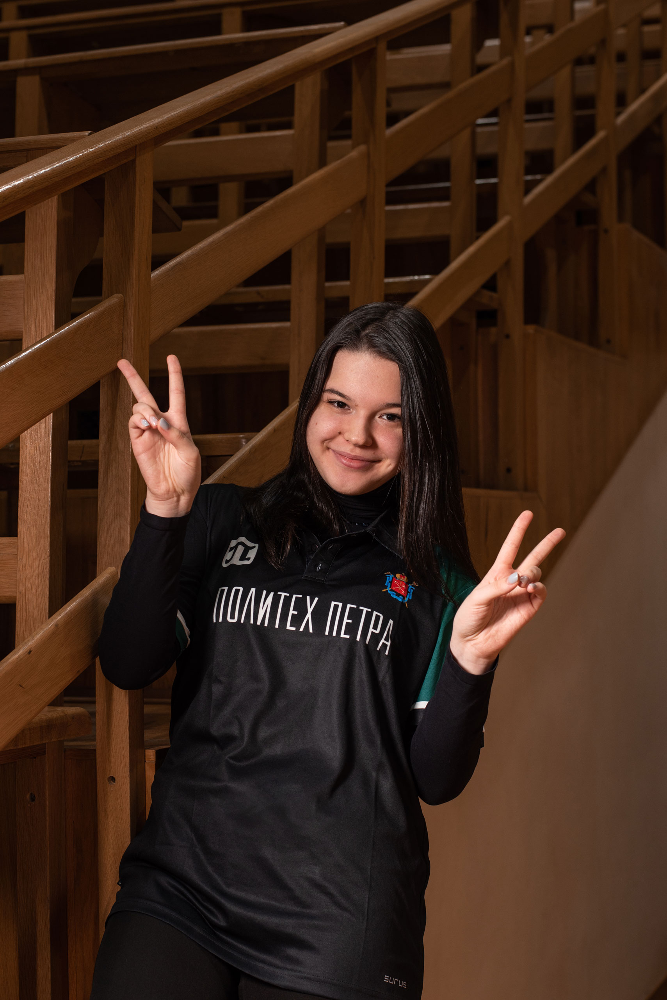
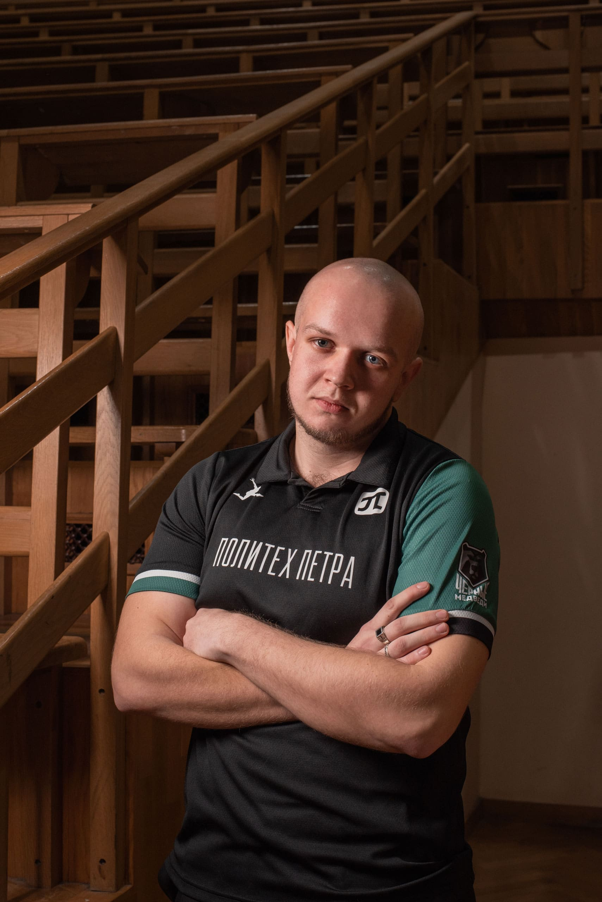
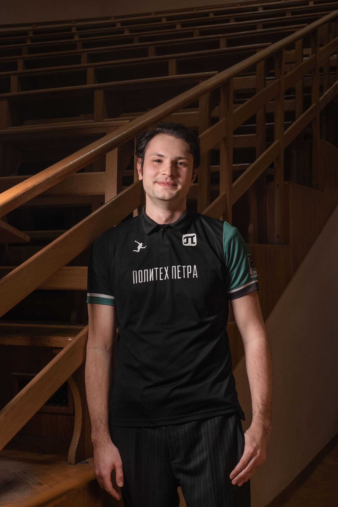

Наши сборники

Георгий Васюков
Наставник всей сборной
Победитель и призер множества соревнований. В дартсе почти 10 лет. Победа — это миг. А вся подготовка — это месяцы и годы. И именно в этом пути ты закалял характер, учился дисциплине, преодолевал себя. Этот опыт никуда не делся, он остался с тобой.
Победитель и призер множества соревнований. В дартсе почти 10 лет. Победа — это миг. А вся подготовка — это месяцы и годы. И именно в этом пути ты закалял характер, учился дисциплине, преодолевал себя. Этот опыт никуда не делся, он остался с тобой.

Елакова Валерия
Капитан сборной
Забрала все вторые места в 2024-2025. В 2025 получила КМС в парах. Она изучала теорию, смотрела турниры, разбирала технику чемпионов. Тренировки были ее личным ритуалом, ее тайной войной с самой собой.
Забрала все вторые места в 2024-2025. В 2025 получила КМС в парах. Она изучала теорию, смотрела турниры, разбирала технику чемпионов. Тренировки были ее личным ритуалом, ее тайной войной с самой собой.

Станислава Филиппова
Получила КМС в парах с капитаном сборной на Чемпионате СПб 2025.
Она вцепилась в эту цель с тихим, но несгибаемым упрямством. Ее мир сузился до
стандартной дистанции в 2 метра 37 сантиметров.
Дома на стене появилась мишень, и вечерами монотонный стук дротиков стал ее личной
медитацией.
Ладонь запомнила правильный хват, плечо — нужную амплитуду, а глаза — прицел в
«яблочко».

Мария Тенсина
Победитель и участник множества турниров в юниорах. Занимаемся дартсем
с 7 лет. Был юниорский КМС.
Для всех остальных это была просто игра. Набор дротиков, мишень и правила. Для нее —
поле битвы, где противник был невидим.
Она сражалась не с соперницей по ту сторону доски, а с тишиной в собственной голове.
Это называлось «дартит». Проклятие точности. Необъяснимый, физический сбой, когда на
тренировках она клала три дротика в «яблочко» с завязанными глазами,
а на соревнованиях не могла попасть даже в «удвоение». Рука становилась чужой,
деревянной.

Дарья Богданова
Новичок, который стремится завоевывать призовые
Не было пьедестала или кубка. Но было нечто большее — уважение в глазах соперниц, которые уже не улыбались, а кивали ей с серьезными лицами. И самое главное — рожденное внутри стойкое, железное чувство: «Я могу».
Не было пьедестала или кубка. Но было нечто большее — уважение в глазах соперниц, которые уже не улыбались, а кивали ей с серьезными лицами. И самое главное — рожденное внутри стойкое, железное чувство: «Я могу».

Валерия Алексеева
Выпускник сборной
Заняла 3 место в 2024 году по дисциплине "Набор очков" Она так и не вошла в элиту. Не услышала рев толпы в свой адрес. Не подняла над головой блестящий кубок. Были сотни часов тренировок, мозоли на пальцах, разочарования от промахов и эйфория от точных попаданий. Но где-то на полпути огонь внутри погас. Соревнования стали рутиной, а мишень — просто мишенью, а не врагом или целью.
Заняла 3 место в 2024 году по дисциплине "Набор очков" Она так и не вошла в элиту. Не услышала рев толпы в свой адрес. Не подняла над головой блестящий кубок. Были сотни часов тренировок, мозоли на пальцах, разочарования от промахов и эйфория от точных попаданий. Но где-то на полпути огонь внутри погас. Соревнования стали рутиной, а мишень — просто мишенью, а не врагом или целью.

Варвара Погорецкая
Выпускник сборной
Он не добился медали. Но он добился чего-то другого — уважения к самому себе, понимания ценности процесса и железной воли, которую не сломить одним провалом. И, возможно, именно этот «неудачник», который не сдался и продолжил идти, в итоге станет сильнее любого вундеркинда, познавшего успех слишком рано. Потому что он прошел через огонь сомнений и не сгорел. А это — самая большая победа, которая только может быть.
Он не добился медали. Но он добился чего-то другого — уважения к самому себе, понимания ценности процесса и железной воли, которую не сломить одним провалом. И, возможно, именно этот «неудачник», который не сдался и продолжил идти, в итоге станет сильнее любого вундеркинда, познавшего успех слишком рано. Потому что он прошел через огонь сомнений и не сгорел. А это — самая большая победа, которая только может быть.

Андрей Никитин
Выпускник сборной
"Соревнования — это лотерея, где кроме тебя есть десятки других, кто трудился так же, а может, и больше. Кому-то просто лучше удался этот день. Кто-то оказался чуть сильнее, быстрее, удачливее."
"Соревнования — это лотерея, где кроме тебя есть десятки других, кто трудился так же, а может, и больше. Кому-то просто лучше удался этот день. Кто-то оказался чуть сильнее, быстрее, удачливее."

Андрей Белаш
Выпускник сборной
Он шел домой с одной лишь грамотой «за участие», которая казалась не наградой, а констатацией факта: «ты был, но этого недостаточно». Горько? Не то слово. Это была глухая, ноющая боль от осознания, что твоего максимума миру оказалось мало.
Он шел домой с одной лишь грамотой «за участие», которая казалась не наградой, а констатацией факта: «ты был, но этого недостаточно». Горько? Не то слово. Это была глухая, ноющая боль от осознания, что твоего максимума миру оказалось мало.